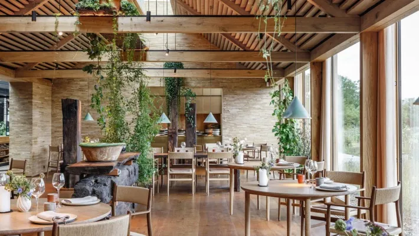
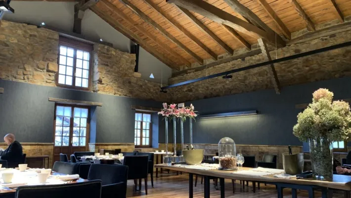
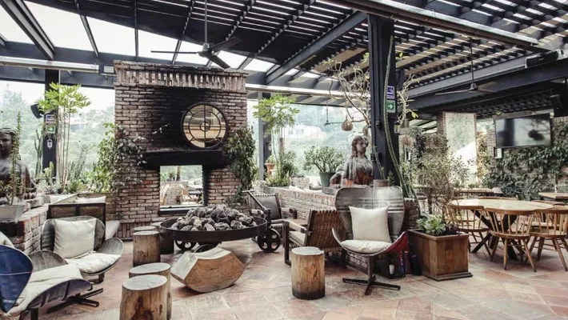
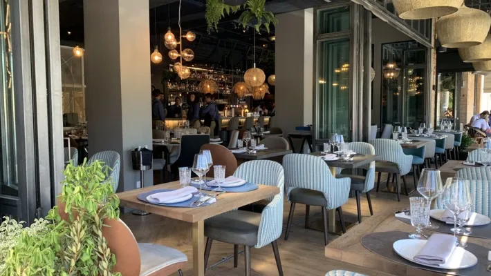

Orca
Orca Inicio
Inicio -Este restaurante se localiza en Francia y es top 1 de los restaurantes más famosos.
Su chef estrella es el chef Mauro Colagreco y este restaurante tiene 3 estrellas Michelin. Las creaciones del chef están inspiradas en sus raíces italianas y argentinas. Los sabores predominantes son el mar, la montaña y los frutos y verduras que son cultivados en los jardines y huerta del lugar.
Este increíble restaurante está aferrado a la montaña y dominando el mar, este majestuoso edificio de los años treinta se ha convertido en escenario para el arte del Chef Mauro Colagreco. Prolongado en un soberbio jardín en terrazas, ofrece una vista magnífica de Menton y el Mediterráneo. En la cocina, se afanan en crear los platos concebidos por este joven chef, que encuentra su inspiración en las hortalizas raras y los brotes de las huertas del Mirazur, así como en sus orígenes italo-argentinos. Su risotto de quinoa, setas de bosque y crema de parmesano, o los pescados del día acompañados de puré de apio nabo y salsa ahumada nos invitan a vivir experiencias gastronómicas originales.
| Narval | Ballena Jorobada | Orca |
| Delfin | Delfin de Río | Inicio |